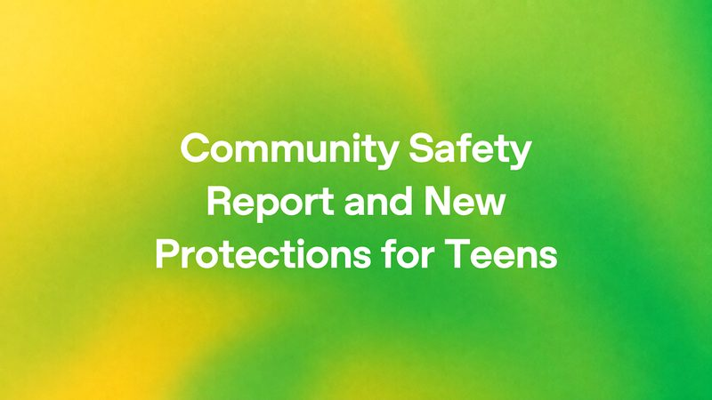
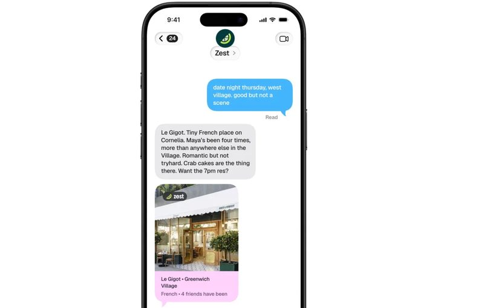
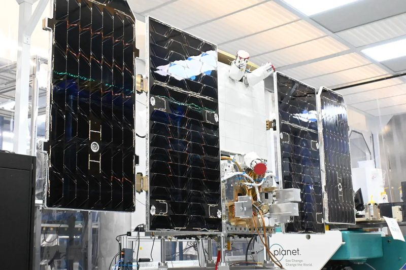

圖：OpenAI新聞#1ChatGPT 對青少年再收緊武器資訊，還會自動結束暴力對話
OpenAI 10 月 30 日（美國時間）宣布，ChatGPT 對未滿 18 歲用戶會再限制武器與保全系統的實用資訊，即使問題看起來無害也一樣；對所有用戶則收緊重建過去大規模攻擊細節的回答。對話若顯示有人執著於傷害他人，ChatGPT 可自動結束對話，多次發生可能暫停帳號。OpenAI 也表示第三季向執法單位通報超過 200 件，並將在 2027 年初發布第一份「社群安全報告」。
💡 跟你有什麼關係：家長若已用家長控制連結孩子的帳號，之後孩子帳號因談論暴力被停用或暫停時，會收到通知（暫停通知仍在開發中）。被系統誤判成未成年的大人，可以透過 Persona 驗證年齡解除限制。
⚠️ 官方說這些措施會在「接下來幾週」陸續上線；年齡判斷靠系統推測，可能誤判。
📰 原始來源：OpenAI（2026-10-30） ↗圖：TechCrunch新聞#2Reddit 要改成「登入才好看」，AI 搜尋讓流量下滑
Reddit 10 月 29 日公布第三季財報時宣布，網站將轉為以登入為主的體驗，用來防止 AI 抓取資料，改走授權給模型公司的路線。Reddit 說 10 月來自搜尋引擎的導流平均每週少了 100 萬次以上，美國每日活躍用戶從 5,320 萬降到 5,070 萬；但營收仍年增 53%，達 8.95 億美元。
💡 跟你有什麼關係：很多人習慣在 Google 搜尋後面加「Reddit」找真實心得，之後未登入可能看不到完整內容。這也顯示 AI 摘要讓人少點網站，內容網站開始把門關起來。
⚠️ Reddit 說第四季先在美國以外的部分市場測試，還沒有全面上線時間表。
📰 原始來源：TechCrunch（2026-10-29） ↗圖：OpenAI政策#3OpenAI 承諾遵守共通的「不要拿我網站訓練 AI」訊號
OpenAI 10 月 30 日宣布，將遵守 robots.txt 裡一個跨 AI 公司共用的訊號，讓網站一次表明內容能不能拿去訓練生成式 AI。這個訊號來自網際網路工程任務組（IETF）AI 偏好工作小組的討論，OpenAI 預計在未來幾個月內實作，原本針對自家爬蟲的設定也會繼續有效。
💡 跟你有什麼關係：有經營部落格或網店的人，以後可能只要寫一行設定，就能同時告訴多家 AI 公司「別拿我的文章訓練」，不必一家一家設定。
⚠️ 這是自願性做法，其他 AI 公司是否跟進、何時實作都還不確定；它管的是「訓練」，不一定涵蓋 AI 搜尋引用。
📰 原始來源：OpenAI（2026-10-30） ↗圖：TechCrunch／Getty Images觀點#4DoorDash：AI 代理幫人點外賣，總共才幾百筆
外送平台 DoorDash 在第三季財報會議上說，透過 Muse、Instinct 等第三方 AI 代理下的訂單「總共大概幾百筆」。對照它 2025 年報說每天平均約 300 萬筆外送，執行長 Tony Xu 說，大多數人還是用 DoorDash 自己的 App 下單。
💡 跟你有什麼關係：最近很多公司宣傳「讓 AI 幫你購物」，但實際用的人還很少；一般人不用急著把信用卡交給 AI 代理，等功能和保障更成熟再說。
⚠️ 這只是 DoorDash 一家的數字；DoorDash 自己也有文字點餐等 AI 功能，未計入這個數字。
📰 原始來源：TechCrunch（2026-10-30） ↗
圖：TechCrunch／Zest新上線#5Zest 推出簡訊 AI 訂位助理，群組裡也能投票選餐廳
美國餐廳推薦 App Zest 10 月 29 日推出「餐廳管家」，用傳簡訊就能問推薦，並透過 OpenTable、Resy、SevenRooms 直接訂位。它會依使用者授權的信用卡消費紀錄（透過 Plaid 匯入，只看餐飲類）了解口味，也能拉進群組，綜合大家喜好並讓群組投票。
💡 跟你有什麼關係：這是「AI 代理取代 App」的一個例子：以後找餐廳、訂位可能在聊天視窗就做完。但要它懂你，代價是交出信用卡消費紀錄，隱私要自己衡量。
⚠️ 目前只在美國、以美國餐廳為主；外送點餐功能官方說「即將推出」。
📰 原始來源：TechCrunch（2026-10-30） ↗
圖：Planet Labs PBC（經 TechCrunch）研究#6Google 第一顆「太空資料中心」衛星上線，先寫了首俳句
Google Suncatcher 計畫的原型衛星本月隨 SpaceX 獵鷹 9 號升空，經過約三週檢測後已上線並和地面通訊。衛星載有 4 顆 Google TPU 晶片、最多發電 1 千瓦，但一次只能開一顆、每次約 20 分鐘；工程師請上面的 Gemma 4 模型寫了一首太空俳句。
💡 跟你有什麼關係：AI 用電越來越兇，科技公司開始想把運算搬到有太陽能的太空。短期不會影響你用的服務，但這關係到未來 AI 的電費與環境成本。
⚠️ 還在測試輻射與高溫對晶片的影響；下一步是 2027 年再發射兩顆，真正實用要到 2030 年代。
📰 原始來源：TechCrunch（2026-10-30） ↗圖：CBC／The Canadian Press（Christinne Muschi）資金#7加拿大政府砸最多 16 億加幣入股 Cohere
加拿大總理卡尼 10 月 29 日宣布，政府將對多倫多 AI 公司 Cohere 進行最多約 16 億加幣的股權投資，分階段撥款。Cohere 同日宣布 E 輪募資完成首次交割，目標最高 70 億加幣、估值約 360 億加幣，由德國 Schwarz 集團領投，Nvidia、Bell 等參與；Cohere 承諾 2030 年前在加拿大新增至少 1,000 個技術職缺、投入至少 17 億加幣建算力。
💡 跟你有什麼關係：各國開始用國家資金扶植「自己的 AI」，不想只靠美國和中國公司。未來政府、銀行等單位選 AI 服務時，資料放哪裡、受哪國法律管，會是越來越重要的考量。
⚠️ Cohere 只完成首次交割，沒說已到位多少、何時完成整輪。
📰 原始來源：CBC News／Reuters（2026-10-29） ↗圖：TechCrunch／Anna Moneymaker／Getty Images資金#8FT：Anthropic 上市後信評恐落在「垃圾級」
金融時報 10 月 30 日報導，曾主導 Anthropic 一筆 630 億美元晶片融資的 Blackstone 告訴投資人，預期 Anthropic 上市後會拿到 BB 級信評，也就是投機（俗稱垃圾）等級中最高的一級。Blackstone 先前原本說 Anthropic 2027 年前可拿到投資等級；Anthropic 和 Blackstone 都拒絕置評。
💡 跟你有什麼關係：信評較低代表借錢更貴，AI 公司大量買算力的燒錢模式可能更吃力；對一般人來說，這也是「AI 投資熱潮出現裂縫」的訊號之一，買相關股票或基金時要留意風險。
⚠️ 這只是 Blackstone 的預測，評等機構尚未正式給分。
📰 原始來源：TechCrunch（2026-10-30，引述 FT） ↗✅ 今天可以做：家裡有小孩或青少年用 ChatGPT 的話，可以看一下「家長控制」能不能把帳號連結起來，掌握安全提醒。
🗂️ 過去 14 天